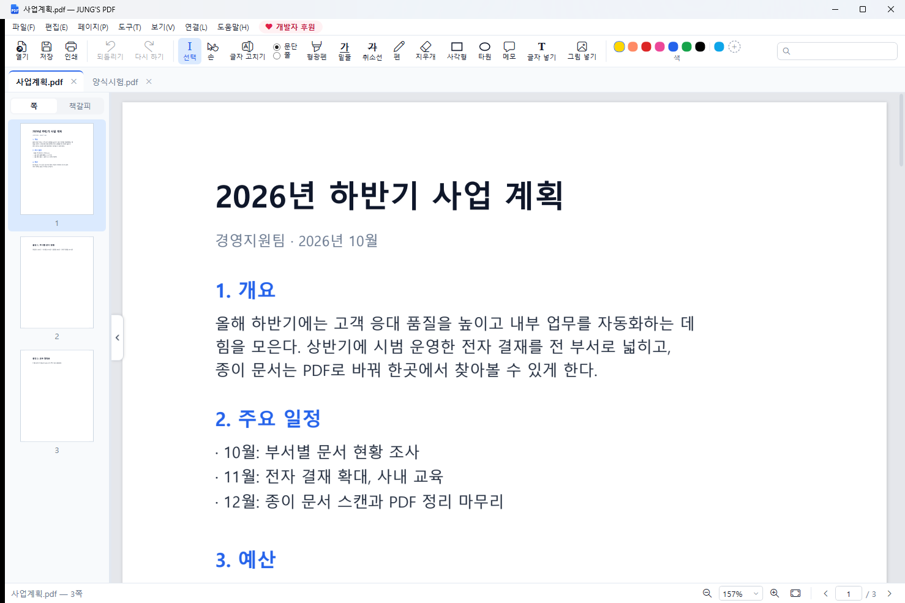
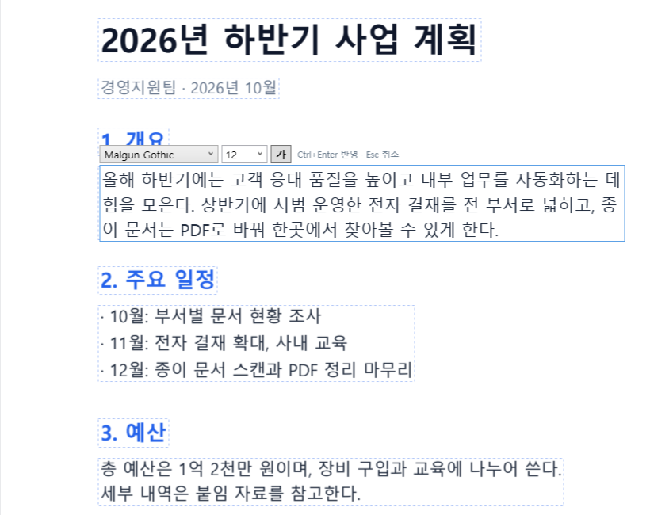
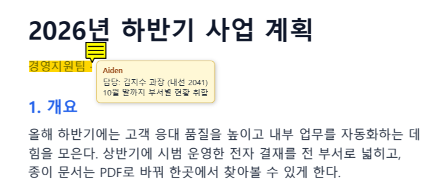
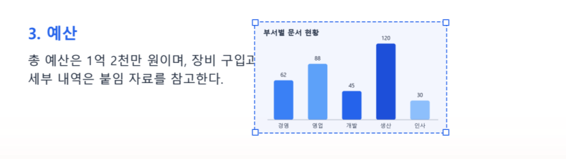

글자 고치기부터 형광펜 · 메모, 페이지 정리, 인쇄, 글자 인식까지.
필요한 건 다 있는 Windows용 PDF 편집기입니다.

돈 내고 쓰던 PDF 프로그램의 기능을 무료로 쓰세요.
PDF에 원래 있던 글자를 워드처럼 그 자리에서 고칩니다.
칠하고 긋고, 글자에 메모를 붙입니다. 색도 마음대로.
도장 · 로고 · 사진을 넣고 옮기고 크기를 바꿉니다.
돌리기 · 지우기 · 순서 바꾸기 · 합치기 · 나누기.
미리보기로 인쇄하고, 아무 프로그램에서나 인쇄해서 PDF를 만듭니다.
스캔한 PDF의 글자를 읽어 찾기 · 복사가 되게 합니다.
AES-256 암호로 PDF를 잠그고, 바꾸고, 풉니다.
크롬 · 엣지에서 보던 PDF를 단추 하나로 JUNG'S PDF에서 엽니다.
「글자 고치기」를 누르고 고칠 문단을 누르면 바로 고칠 수 있습니다.
문단 단위로 고치면 줄 바꿈도 원래 폭에 맞춰 다시 맞춥니다. 폰트 · 크기 · 굵게도 바꿀 수 있습니다.

고른 글자에 메모를 달면 노랗게 표시되고, 마우스를 올리면 내용이 말풍선으로 보입니다.
표준 PDF 주석이라 다른 PDF 프로그램에서도 그대로 보입니다.

그림이나 넣은 글자를 누르면 손잡이가 생깁니다. 끌어서 옮기고, 귀퉁이로 크기를 바꾸고, 화살표 키로 조금씩 움직입니다.
글자 뒤로 · 앞으로 순서도 바꿀 수 있습니다.

1분이면 끝납니다.
JUNG'S PDF는 무료입니다. 쓰시면서 도움이 되셨다면 커피 한 잔으로 응원해 주세요.
휴대폰 카메라나 카카오톡 코드스캔으로 QR을 찍으면 카카오페이로 보낼 수 있습니다.
후원하지 않아도 모든 기능을 그대로 쓰실 수 있습니다.
궁금한 점이 더 있으면 infill@naver.com으로 보내 주세요.
네. 모든 기능이 무료이고 광고도 없습니다. 회원 가입도 필요 없습니다.
아니요. 모든 작업은 내 PC 안에서만 이루어지고, 어떤 정보도 수집하거나 보내지 않습니다. OCR 글자 인식도 Windows에 들어 있는 기능을 써서 인터넷이 필요 없습니다.
Windows 10(1809 이후) · Windows 11, 64비트 PC에서 쓸 수 있습니다. 맥은 아직 지원하지 않습니다.
이 페이지에서 새 설치 파일을 받아 실행하면 됩니다. 이전 버전을 지우지 않아도 그대로 업데이트되고, 설정도 남아 있습니다.
스캔한 PDF는 글자가 그림이라 바로 고칠 수는 없습니다. 「도구 → OCR」로 글자를 인식하면 찾기 · 복사는 됩니다. 그림 위에 흰 사각형을 덮고 「글자 넣기」로 새로 쓰는 방법도 있습니다.
프로그램의 「도움말 → 버그 · 문의 메일 보내기」나 infill@naver.com으로 알려 주세요. 문제가 생긴 PDF와 어떤 순서로 했는지 적어 주시면 빨리 고칠 수 있습니다.